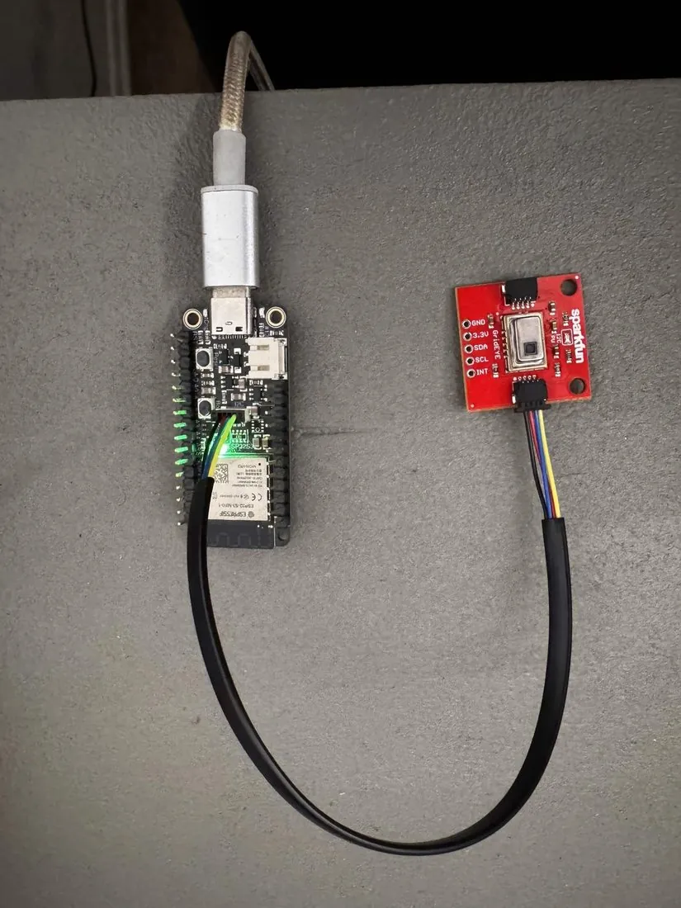
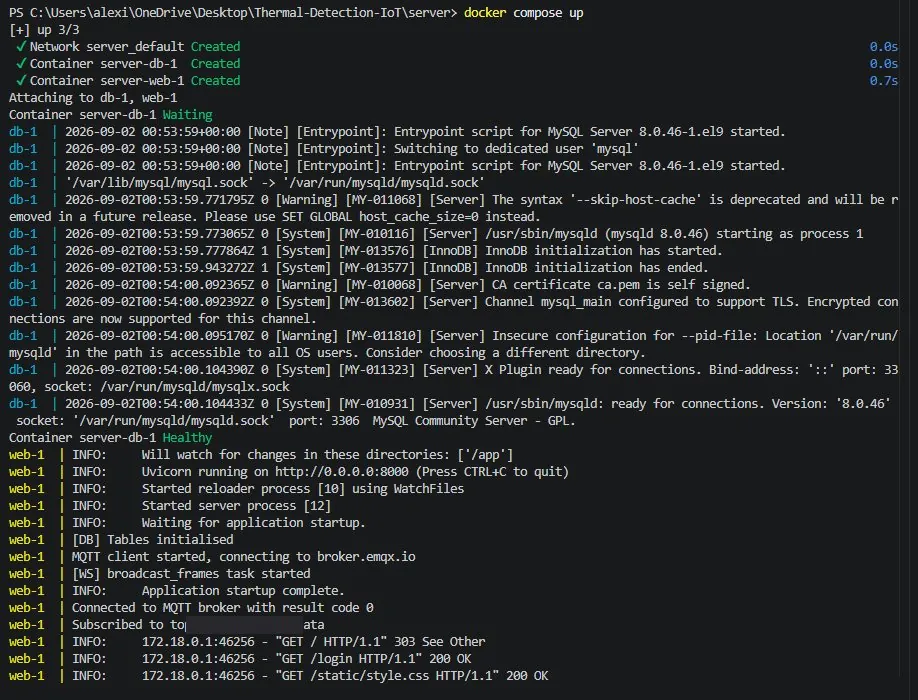
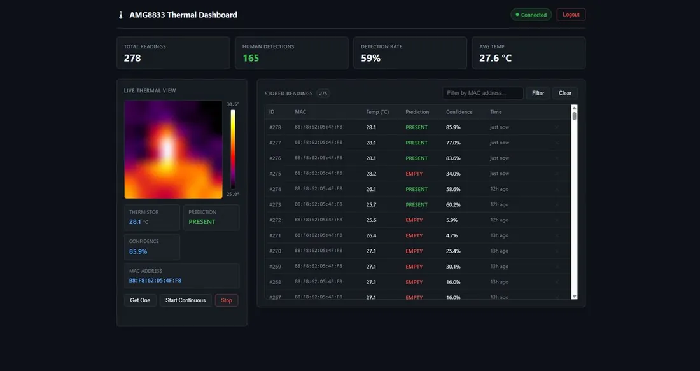
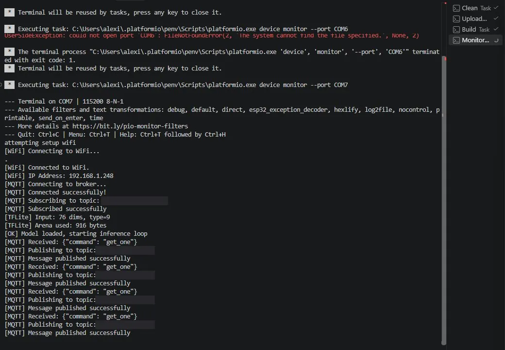

Thermal Presence Detection
Sensor to browser: firmware, a broker, an API, a database and containers — then I went back and audited what I'd shipped.

The problem
Detect whether a person is in a room, cheaply, without a camera.
Cameras solve this well and bring problems with them: cost, privacy, and the political difficulty of putting a lens in a room people occupy. An 8×8 thermal sensor sees a person as a warm blob and nothing more — there's no face in a 64-pixel frame, no identity, nothing worth stealing. The trade-off is that 64 pixels is very little signal, and the classification problem becomes genuinely hard.
The build constraint was that inference had to run on the microcontroller. A system that ships 64 floats to a server for classification isn't an embedded ML system, it's a sensor with extra steps. Doing the work on-device meant fitting a model into a few kilobytes of flash and an 8 KB tensor arena, and it meant every decision about features was a decision about compute budget.
PRESENT. Right: the same room empty — 34.0%, EMPTY. Both frames auto-scale to their own min and max, which is why the empty room still shows structure. The difference is the shape of the signal, not its brightness.Approach
The ESP32-S3 reads the AMG8833 over I²C, turns 64 raw pixels into a 76-element feature vector, runs a quantised model locally, and publishes both the frame and its verdict over MQTT. A FastAPI service subscribes to the broker, writes every frame to MySQL, and fans it out to browsers over a WebSocket. The device and the server never talk directly — the broker sits between them, so the device doesn't need to know where the server is or whether it's up.
The most consequential decision was not feeding raw pixels to the model. The 76-element vector is mostly hand-engineered.
| Index | Feature | Why |
|---|---|---|
| 0–63 | Pixels as (pixel − median) / std | Invariant to ambient room temperature |
| 64–67 | Max temp, range, counts 3 °C and 5 °C above median | Cheap thermal signature of a warm body |
| 68 | Mean absolute spatial gradient | People have edges; empty rooms don't |
| 69 | Largest connected hot blob, BFS over the grid | A person is one blob, not scattered noise |
| 70–71 | Quadrant variance, centre-minus-surround | Spatial distribution without spatial layers |
| 72–73 | Std dev of per-row and per-column maxima | Cheap proxy for shape |
Per-frame median centring is the load-bearing idea. Absolute temperature is nearly useless, because a person in a 19 °C room and the same person in a 27 °C room produce completely different raw values. Centring each frame on its own median makes the signal about contrast instead of temperature, which is the thing that generalises.
Architecture
ESP32-S3 ── AMG8833 (I²C) ──▶ computeFeatures() ──▶ int8 model ──▶ PRESENT / EMPTY
│
MQTT :1883
▼
broker.emqx.io
│
Browser ◀── WebSocket /ws ── FastAPI ── MySQL 8.0 │
Canvas heatmap MQTT sub + REST + auth ◀─────────────────┘
Details worth noting. Build-time configuration: a PlatformIO pre-build hook reads .env and injects each key as a -D compiler flag, so credentials are baked into the binary and a missing .env fails the build rather than producing a device that silently can't connect. Devices self-register: the server does INSERT IGNORE before storing a reading, so a new ESP32 appears on its first publish with no provisioning step. The device idles until told to work — it publishes nothing until it receives get_one or start_continuous on the command topic.
What I built, and what was given
This was a structured course project, and I want to be precise about that up front.
ECE 140A built toward this system across ten weeks of guided labs, each adding a layer: ESP32-S3 fundamentals, then the sensor, then backend and frontend and SQL, then MQTT, then the on-device model, then password hashing and sessions. The TA designed the project structure and the progression. I implemented each stage against that spec.
I'm stating this plainly because the alternative is worse. A team lead reading a portfolio can usually tell scaffolded coursework from independent design, and a candidate who presents the first as the second loses credibility on everything else they claim. It's also a fair description of a lot of real junior work — you implement against an architecture someone senior already chose.
Provided by the course
| The project structure and the staged progression toward it |
ECE140_WIFI and ECE140_MQTT — connection helpers, including the WPA2-Enterprise path |
The build-time .env → -D flag injection script |
| The Python training pipeline, reference feature definitions, and the trained model |
What I implemented
Device side. main.cpp end to end: sensor read, feature computation, inference, JSON assembly, MQTT publish, command handling. The piece I'd defend hardest is the C++ port of the feature pipeline — the reference features were defined in Python with NumPy, and getting the same numbers out of C++ on an MCU meant reimplementing median, standard deviation, spatial gradient, and a breadth-first search for the largest connected hot blob with fixed-size arrays and no heap. It had to match the Python exactly, because any divergence between training and device silently degrades the model.
Server side. A FastAPI service that is simultaneously an MQTT subscriber, a REST API, a WebSocket broadcaster and a session-authenticated web app. The integration decisions that matter:
Untrusted data is validated at the boundary. Frames arrive from a public broker, so anything can publish to the topic. Every payload is parsed into a Pydantic model before it goes near the database, and a malformed one is logged and dropped rather than raised.
Web input can't inject arbitrary device commands. The HTTP surface can publish to the device's command topic, which makes it a path from the internet to the hardware. It's gated by an allowlist, not a passthrough:
VALID_COMMANDS = {"get_one", "start_continuous", "stop"}
if body.command not in VALID_COMMANDS:
raise HTTPException(status_code=400, detail=f"Unknown command: {body.command}")Backpressure is handled by dropping, not queueing. The broadcast task polls at 10 Hz and sends only the most recent frame, clearing it after send. A slow browser loses frames instead of falling progressively further behind a growing queue.
The WebSocket is authenticated. /ws takes a session token from a query parameter or the cookie, validates it against the sessions table, and closes with code 1008 before accepting if it doesn't check out. The live data path has the same auth requirement as the REST endpoints rather than being an open side door.
Container side. Two services under Compose, four tables with foreign keys, the 64 pixel floats in a single MySQL JSON column, bcrypt hashing with UUID4 session tokens, and a Dockerfile that syncs dependencies before copying the project so a source change doesn't invalidate the dependency layer.
What nobody asked for
The audit in section 05. The class ended, the project was submitted and working, and the classifier still felt wrong to me in the room. I went back afterward and found out why. That work is entirely mine and it wasn't graded.
Hard parts
Startup ordering across containers, and knowing which failures to retry
Two containers that depend on each other create a race the moment you run docker compose up. MySQL takes several seconds to initialise, and it accepts TCP connections well before it will answer a query. A web service that connects at startup either crashes on boot or, worse, comes up "successfully" and fails on the first real request thirty seconds later, when the cause is no longer obvious.
The healthcheck asserts readiness, not reachability. Compose runs an authenticated SELECT 1 and the web service declares condition: service_healthy rather than a bare depends_on. Port-open is not the same as ready-to-serve, and treating them as equivalent is the usual way this bug survives.
The retry loop distinguishes transient failures from permanent ones.
except mysql.connector.Error as err:
# Bad credentials or a missing schema never fix themselves on a retry, so
# fail startup here instead of dying on the first request 30 seconds later.
if err.errno in (errorcode.ER_ACCESS_DENIED_ERROR, errorcode.ER_BAD_DB_ERROR):
raise RuntimeError(f"[DB] fatal: {err}") from err
print(f"[DB] Waiting for MySQL.. ({err})")
time.sleep(1)A connection refused because MySQL is still starting is worth retrying. A wrong password is not — it will fail identically thirty times and then surface as a timeout, which points at the wrong problem. Sorting errors into "wait" and "give up now" is the difference between a startup failure that tells you what's wrong and one that wastes half an hour.

Healthy before the web container starts, tables initialised, MQTT subscribed, the broadcast task running.Debugging a 6.6 KB binary blob on a constrained target
The deployed classifier reported 89.15% accuracy. Standing in front of the sensor, it called EMPTY often enough that I didn't believe the number. The assignment was already submitted and passing, so nothing required me to look into it. I looked into it anyway, months later.
The model is a compiled flatbuffer embedded in flash as a byte array — there's no source to read and no debugger to attach, which is the normal situation with a vendor blob or a binary artifact in an embedded build.
Getting at the contents without the toolchain. Rather than install the full training stack to interrogate 6,672 bytes, I wrote a parser that walks the flatbuffer schema directly, extracted the int8 weights, and dequantised them by hand. That turned an opaque binary into a float forward pass I could run over the whole dataset in seconds. The technique generalises — reading a binary format from its schema when no tooling exists is the same skill whether the blob is a model, a calibration table, or a firmware image.
Ruling things out in order. Before hunting for a bug I eliminated the boring explanations. Quantisation damage? No — the input range covers ±4.5σ and the output is a proper sigmoid. A mismatch between what the device computes and what training assumed? No — the on-device normalisation produces exactly the positive skew that median centring produces. Did the deployed artifact drift from the one I validated? No — byte-identical.
I found a real bug, and it turned out not to matter. Two features were being zeroed before standardisation rather than after. In a standardised space, 0.0 is the training mean — a neutral "ignore this input" value. Zeroing the raw value and then scaling it turns it into a permanent 0.87σ and 0.73σ offset injected on every single frame. That's a genuine defect and the explanation felt satisfying, so I measured it before believing it:
| Variant | Held-out accuracy |
|---|---|
| Current firmware — zero before scaling | 87.85% |
| Original firmware — zero after scaling | 87.78% |
| Both features properly implemented | 88.20% |
+0.35 points. Worth fixing for correctness, nowhere near an explanation. I'd found the bug I went looking for and it was the wrong answer, which is the part of this I'd want to talk about in an interview.
The actual cause: graded on an easier test than it sat
The training pipeline discards 19.1% of frames — 3,365 of 17,611 — before training or scoring. Those frames still arrive at the sensor in deployment. The benchmark simply never looked at them.
| Frame set | n | Accuracy | Class balance |
|---|---|---|---|
| Kept — source of the 89% figure | 14,246 | 89.15% | 41% present |
| Discarded | 3,365 | 28.65% | 89% present |
| Every frame the sensor sees | 17,611 | 77.59% | 50% present |
On the discarded frames it does worse than a coin flip, and one-sidedly — they're 89% PRESENT and it calls nearly all of them EMPTY. Those are the weak-signature cases: a person far from the sensor, partly out of frame, or in heavy clothing. Exactly the failure I'd been seeing in the room.
The transferable lesson: a filter applied identically to training and evaluation data is invisible to every metric you compute, and will still find you in deployment. Your test conditions have to look like the field, not like your bench.
A methodological mistake I made first
Ranking inputs by mean absolute weight, one of the suspect features came out 15th of 76 — high enough that I assumed it mattered. Direct measurement showed removing it costs about 0.35 points. Weight magnitude is a poor proxy for actual contribution, and I'd have shipped a wrong conclusion if I'd stopped at the ranking instead of measuring it.
Results
Working system: live 8×8 heatmap in the browser, authenticated dashboard, every frame persisted, device self-registration, command and control over MQTT.


Arena utilisation: 916 bytes of the 8 KB allocated. The serial log reports it at boot, which means the arena is over-provisioned by roughly 8×. That's a measured number rather than a guess, and it's actionable — see section 07.
Honest accuracy. 89.15% on the filtered benchmark, 77.59% across every frame the sensor actually sees. The second number is the real one, and it's the one I lead with.
No free win available on the threshold. I swept it across all 17,611 frames:
| Threshold | All-frame accuracy | Recall | Precision |
|---|---|---|---|
| 0.50 (current) | 77.59% | 66.0% | 86.1% |
| 0.30 | 76.96% | 74.3% | 78.6% |
| 0.15 | 75.21% | 83.0% | 71.9% |
| 0.05 | 64.49% | 94.3% | 59.2% |
0.50 is already accuracy-optimal. Dropping to 0.15 buys 17 points of recall for 14 points of precision. That's a legitimate knob if false negatives bother you more than false positives, but it's a trade, not an improvement, and I'd rather say so than present it as tuning.
Known limitations
I'd rather state these than have someone find them. A new MySQL connection is opened per MQTT message — fine at 1 Hz with one device, wouldn't survive a fleet. The container runs uvicorn --reload with the source bind-mounted, which is a development setup shipped as if it were the deployment one. Auth logic is duplicated between the form-post routes and the JSON routes. Sessions never expire and aren't marked secure. MQTT runs on port 1883 with no TLS on a public broker. And on the device, AllocateTensors() and Invoke() return values are ignored, so a too-small arena would yield a silent garbage pointer instead of an error.
This was built as coursework and shouldn't be exposed to the internet as-is.
What I'd do next
Firmware robustness first
These come before accuracy, because they're the difference between a demo and something that survives unattended.
Check the return values of AllocateTensors() and Invoke(). Both are ignored today. A too-small arena yields a silent garbage pointer — the worst failure mode there is, because it doesn't crash, it just produces wrong answers forever. |
| Verify the model's schema version at startup, so a mismatch fails visibly rather than misinterpreting the flatbuffer. |
Swap AllOpsResolver for MicroMutableOpResolver with just the two ops this model needs. The current resolver links every op the library knows about into flash. |
| Shrink the tensor arena. Declared at 8 KB, 916 bytes used. Reclaiming ~7 KB of RAM costs a constant and a re-test, and the number is already printed on every startup. |
| Add wifi timeouts and reconnection. Both connection paths spin unbounded. A device that loses the AP at 3 a.m. blocks forever instead of retrying, with no watchdog behind it. |
Then the classifier
1. Retrain including the discarded hard positives. The 2,612 filtered frames are where the eleven-point gap lives. Everything else is rounding error next to it.
2. Temporal smoothing. Each frame is classified independently with no hysteresis, so at ~78% per-frame accuracy the output visibly flickers. A majority vote over the last N frames wouldn't change per-frame accuracy at all, but it removes a large share of the perceived badness. Cheap, no retraining, and it's a firmware-side change.
3. Fix the two mis-scaled features. +0.35 points. Free and correct, even though it isn't the problem.
4. Reduce ambient-temperature dependence. The second most influential input is absolute temperature, while every other strong feature is ambient-invariant by construction. Deploying a few degrees away from where the training data was collected shifts that input by a full σ.
5. Try a small CNN. Convolutions over the raw grid would use the spatial structure that flattening throws away, at comparable flash cost. Fifth deliberately — more data on the hard cases beats a better architecture trained on filtered data.
WatchTower
Looking for a firmware engineer?
I'm open to full-time embedded and firmware roles.